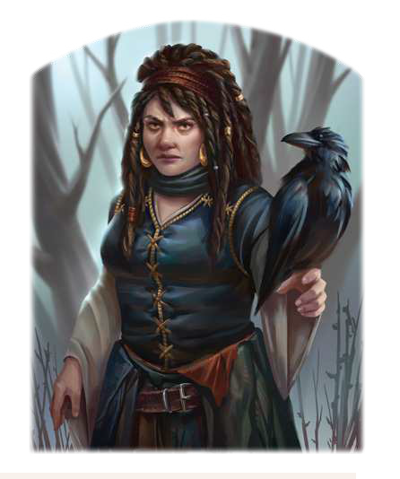

"Ich habe euch bereits erwartet. Ich habe eine Aufgabe für euch, etwas, das einzig Recken wie ihr bewerkstelligen könnt. Kommt nur, kommt herein! Ich will euch die Sache erklären."
Die kleine Frau wirkt stets von der Welt abgewandt und etwas verwahrlost. Tatsächlich ist sie jedoch das einlussreiche Oberhaupt der Hexen im garetischen Reichsforst. Raxan lebt zurückgezogen im Wald in einer Hütte, weit abseits menschlicher Siedlungen. Es heißt, sie sei eine meisterliche Hellseherin und mit der Gabe der Prophezeiung gesegnet, und häuig wird sie gebeten, einen Blick auf das Schicksal oder in die Zukunft zu werfen. Gewiss ist jedoch nur, dass sie eine Rabenhexe ist und dass ihr Vertrauter Horax im Gegensatz zu ihr äußerst gesprächig ist. Unter den Töchtern Satuarias ist sie auch außerhalb ihres Zirkels als besonnene Mittlerin bekannt. Raxan treibt den Dialog zwischen den hexischen Schwesternschaften voran und bemüht sich um deren Einheit. Sie kann im Spiel als Lehrmeisterin für eine hoffnungsvolle Junghexe oder als Auftraggeberin dienen. Je nach Agenda tritt sie Helden aber auch als Antagonistin entgegen, besonders dann, wenn diese den Hexen nicht freundlich gesonnen sind.
Volkes Stimme
- "Frau Schattenschwinge steht auf unserer Seite und alle ihre Bestrebungen zielen darauf, den Menschen zu helfen. Selbst wenn man das vielleicht nicht auf den ersten Blick erkennt."
- "Diese Hexe zögert nicht, Flüche über solche zu bringen, die sich ihr widersetzen. Sie kann daher gar nichts Gutes im Schilde führen, selbst wenn sie noch so oft behauptet, die Zukunft zu kennen!"